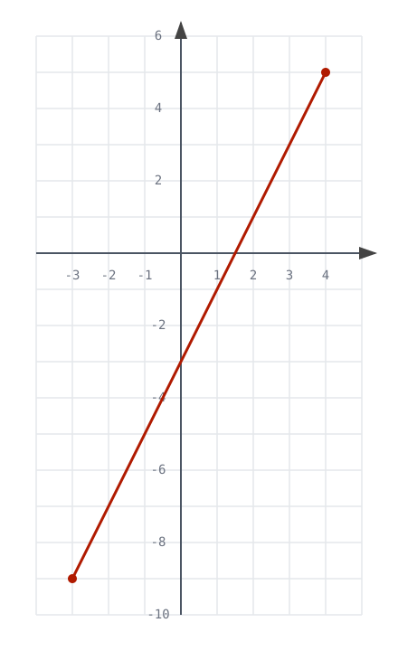

Disegni e moti in 2D
Visitate il sito motus2d.matephis.com:
- muovete il punto sul piano;
- premete
Rper registrare il movimento e tracciare un disegno.
Rispondete ai seguenti quesiti.
- Cosa rappresentano i grafici \(y-t\) e \(x-t\)?
- Perché il grafico di una funzione reale di variabile reale, del tipo \(y = f(x)\), non è adeguato per rappresentare un disegno qualsiasi?
- Perché sono invece necessarie due funzioni, \(f\) e \(g\), che, ad ogni valore di un parametro \(t\), associano rispettivamente un valore di \(x\) e un valore di \(y\)?
- Che cosa rappresenta fisicamente il parametro \(t\)?
Il disegno può essere modellizzato più sinteticamente tramite una sola funzione \(P\), che associa ad ogni valore di un parametro \(t\) un punto \((x, y)\):
\[P(t) = (x, y) \, .\]
- Il disegno corrisponde al grafico di \(P(t) = (x, y)\) oppure alla sua immagine?
- Il disegno può intersecarsi con se stesso?
- Se \(P(t)\) fosse una funzione periodica, quale proprietà avrebbe in disegno?
Su Desmos, definite la funzione \(P(t) = (t, t + 2)\).
- Quale disegno rappresenta \(P(t)\) per \(-2 \leq t \leq 4\)? Formulate una congettura, quindi verificatela su Desmos. Per visualizzare l'immaginare di \(P\), digitare, in una nuova riga, \(P(t)\) e definire il range di \(t\).
- Su Desmos, visualizzate il singolo punto \(P(T)\), al variare di \(T\), definito da uno slider (con opportuni valori massimi e minimi).
- Animate il punto \(P(T)\) in modo che percorra ripetutamente la traiettoria definita da \(P(t)\). Fate in modo che, giunto al termine del percorso, il punto riparta dal punto iniziale. Modificate la velocità dell'animazione.
Osservate ora il seguente disegno:

- Quale funzione \(P(t)\) descrive il disegno? Formulate una congettura, quindi verificatela tramite Desmos.
- Rappresentate su Desmos il punto \(P(T)\) al variare di \(T\) e animatelo lungo la traiettoria.
Uno spirografo matematico
Visitate il sito motus2d.matephis.com e registrate una rotazione alla distanza di 1 unità dall'origine, alla velocità angolare costante di 90° al secondo.
- Quali funzioni sono rappresentate nei grafici \(x-t\), \(y-t\)?
- Cosa succede ai grafici \(x-t\) e \(y-t\) se si raddoppia il raggio di rotazione, ma si mantiene la medesima velocità angolare di 90°/s (ovvero \(\frac \pi 2\) radianti al secondo)?
- Cosa succede ai grafici \(x-t\) e \(y-t\) se si ruota alla distanza di 2 unità dall'origine con una velocità angolare di 180°/s?
- Se il raggio di rotazione misurasse 3 unità e la velocità angolare 45°/s, quali grafici \(x-t\), \(y-t\) vi aspettereste? Formulate una congettura, quindi verificatela.
Create una nuova pagina Desmos.
- Quale funzione del tipo \(P_1(t) = (x, y)\) descrive una circonferenza di raggio \(1\), centrata nell'origine, percorsa in senso antiorario con velocità angolare \(1\) (in radianti al secondo)? Formulate una congettura, quindi verificatela su Desmos.
- Rappresentate sia la traiettoria circolare definita da \(P_1(t)\) sia il punto \(P_1(T)\) che percorre la circonferenza nel modo descritto, al variare del valore di \(T\), definito tramite uno slider.
- Che disegno produce la funzione \(P_2(t) = P_1(t) + 2 \cdot (\cos(-2t), \sin(-2t))\)? Formulate una congettura, quindi verificatela su Desmos.
- Rappresentate anche il punto \(P_2(T)\) che percorre la traiettoria descritta da \(P_2(t)\). Spiegate a parole il moto del punto \(P_2(T)\).
- Sfasate la rotazione di \(P_2\) di un angolo \(\pi\) (ovvero \(180^\circ\)), detto fase. Come cambia il disegno?
A questo punto, fate in modo che i raggi di rotazione \(R_1\) e \(R_2\) dei punti rotanti \(P_1\) e \(P_2\), le velocità angolari \(v_1\) e \(v_2\) e le fasi \(\phi_1\) e \(\phi_2\) siano controllabili mediante slider. Assicuratevi che i raggi siano non negativi e che le velocità angolari assumano solo valori discreti (positivi o negativi).
Suggerimento
\(P_1(t) = \,\dotsc\, (\cos(\,\dotsc\, t), \sin(\,\dotsc\, t))\) e \(P_2(t) = P_1(t) + \,\dotsc\)
- Fate variare i valori dei raggi, delle velocità angolari e delle fasi. Cosa notate?
Le varie figure ottenute sono esempi di polinomi trigonometrici con solo due termini (i due punti rotanti). Figure analoghe si possono ottenere tramite uno spirografo.
In poche parole, i polinomi trigonometrici sono somme o concatenazioni di punti rotanti.
Punti rotanti attorno a punti rotanti, e così via
Per costruire un polinomio trigonometrico con un maggior numero di termini, è possibile ricorrere ai vettori: su Desmos è possibile salvare più valori in un elenco (detto appunto vettore in informatica) digitando, ad esempio, \(a = [2, 3, -1, 4]\). Si può accedere al valore del vettore in una specifica posizione, la seconda ad esempio, digitando \(a[2]\); in questo caso si otterrebbe \(a[2] = 3\).
Create una nuova pagina Desmos.
- Create su Desmos i vettori \(R = [5, 8, 7, 4, 1]\), \(v = [0, 1, -1, 2, -2]\), \(\phi = [0, \frac{\pi}{2}, -\frac{\pi}{2}, 0, 0]\) (per ottenere \(\phi\) digitare
phi).
Per sommare più punti rotanti, usiamo la somma \(\displaystyle\sum_{n = 1}^{5} \dotsc\) (che si ottiene su Desmos digitando sum). Il parametro \(n\) è detto indice e varia da \(1\) a \(5\). Al posto dei puntini si inserisce la definizione dei punti rotanti, usando come raggio, velocità angolari e fasi i valori salvati nei vettori \(R\), \(v\) e \(\phi\) rispettivamente.
- Rappresentate su Desmos il polinomio trigonometrico \(P(t)\) definito come la concatenazione dei punti rotanti sopra definiti.
- Provate a modificare il numero e il valore degli elementi di \(R\), \(v\) e \(\phi\).
Suggerimento
\(P(t) = \displaystyle\sum_{n = 1}^{5} R[n] \cdot (\cos(\,\dotsc\,t + \phi[\,\cdots\,]), \,\dotsc\,)\)
Abbiamo esplorato le curve parametriche e i polinomi trigonometrici, scoprendo che concatenare punti rotanti consente di costruire figure interessanti, simili a quelle di uno spirografo. Nella prossima parte, vedremo come qualsiasi disegno chiuso possa essere rappresentato tramite una concatenazione (infinita) di punti rotanti: la serie di Fourier.